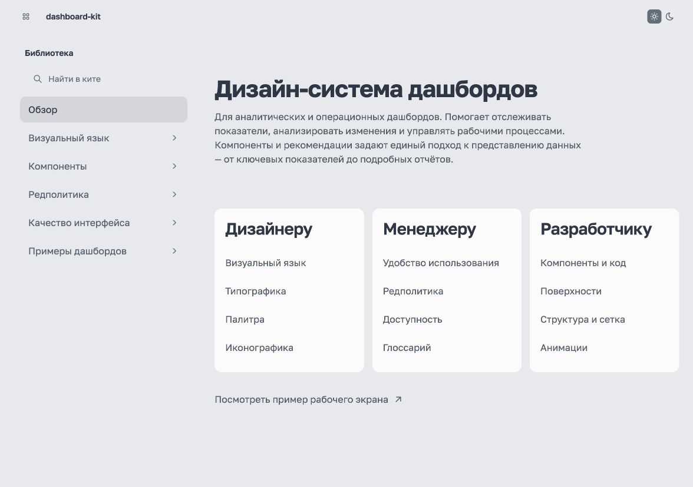
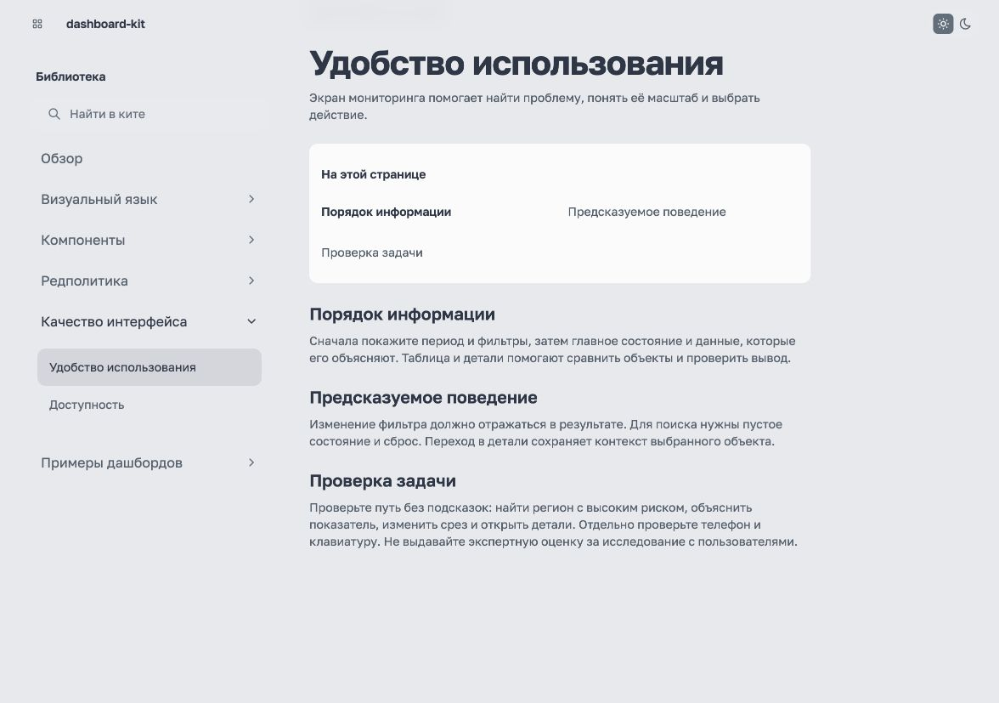
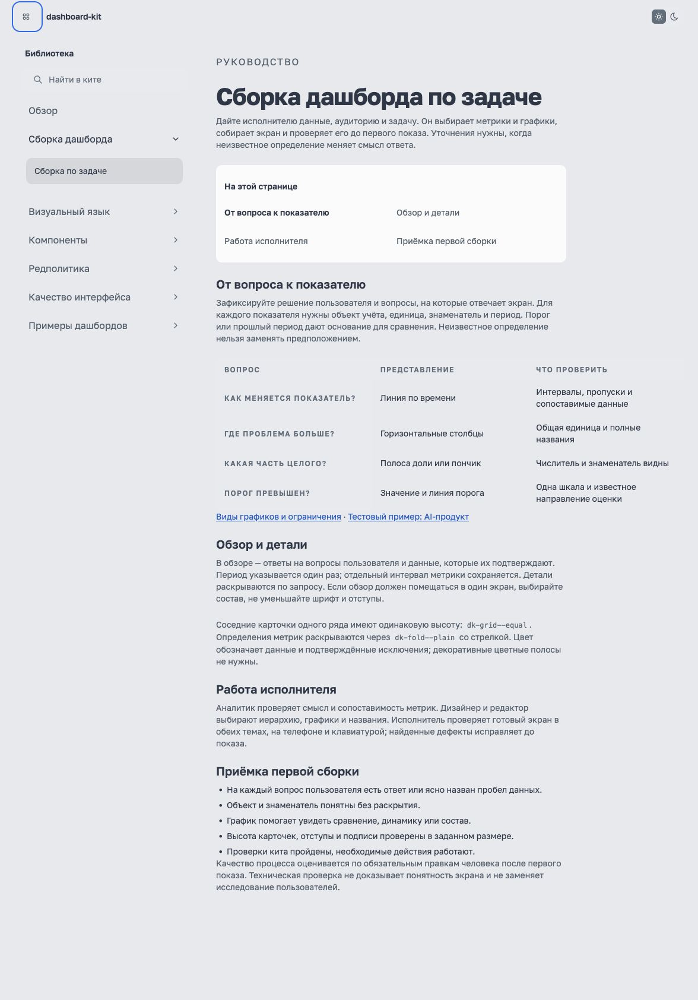
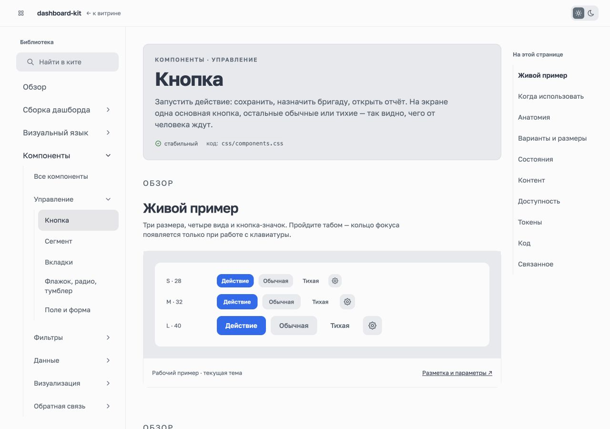
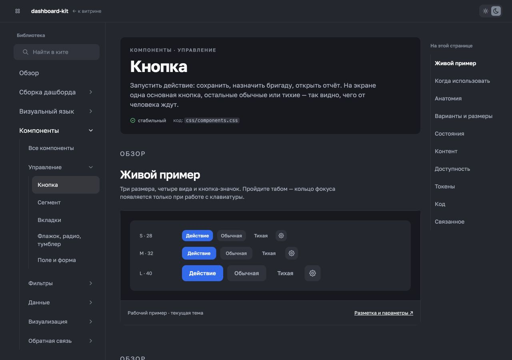

6 октября 2026. Применены Product Design audit и skill-creator. Проверены текущие страницы документации в браузере; изменения внесены в существующий статический кит.



Сценарий поддержки выполнен без уточнений человеку. Три вопроса получили ответы; обзор 1280×720, соседние карточки одинаковой высоты. Исполнитель исправил переполнение и состав до сдачи. Первая сборка · Отчёт и измерения. Принятие владельцем не оценивалось.
Руководство разделено на четыре вкладки с адресами; добавлены визуальные сравнения. Общий шаблон компонентов обновлён: назначение, рабочий пример, переход к коду; библиотека и содержание выделены отдельно. Меню фильтра проверено без обрезания.


Техническая проверка не доказывает понятность продукта. Независимый тест сборки на другом наборе данных оценивается отдельно; один прогон не даёт статистики качества и не заменяет приёмку человеком. Живой телефон и исследование пользователей не проводились.